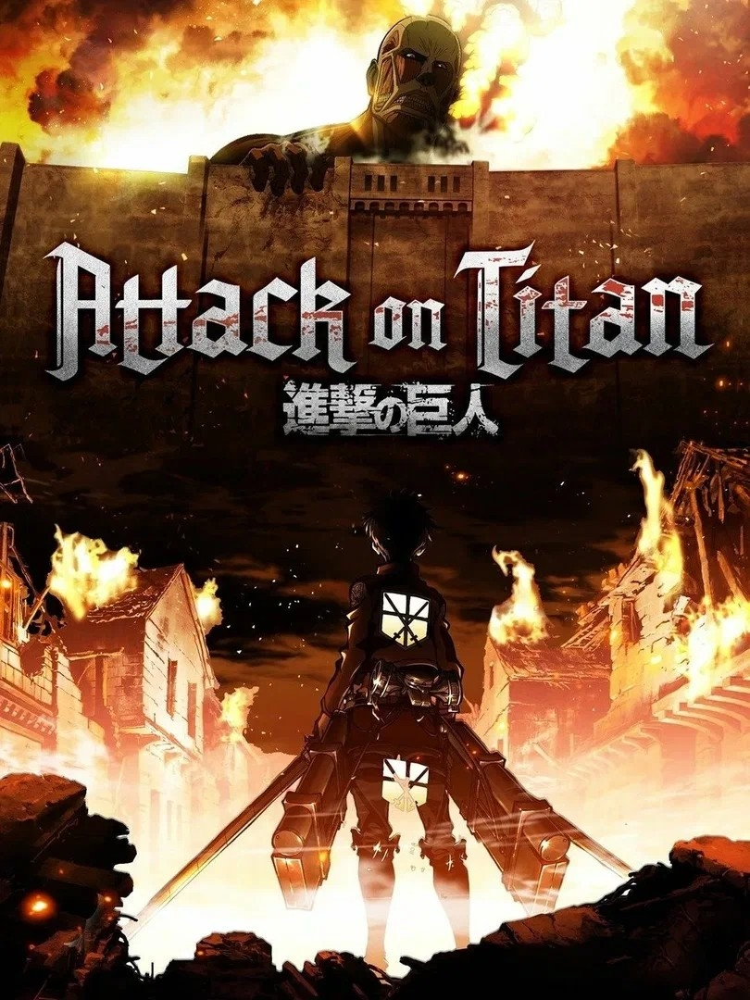
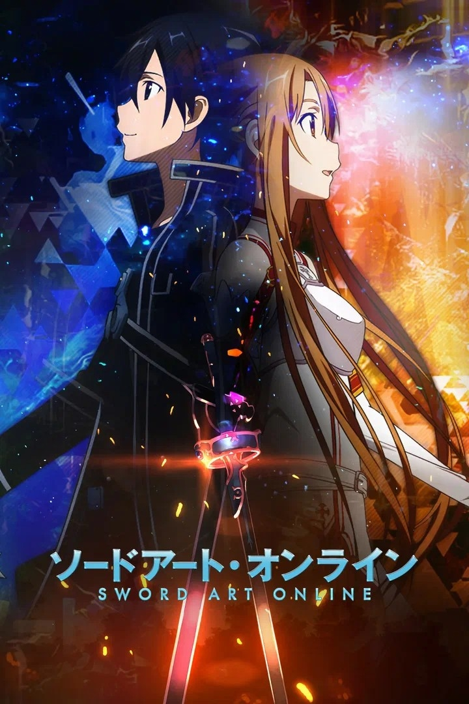
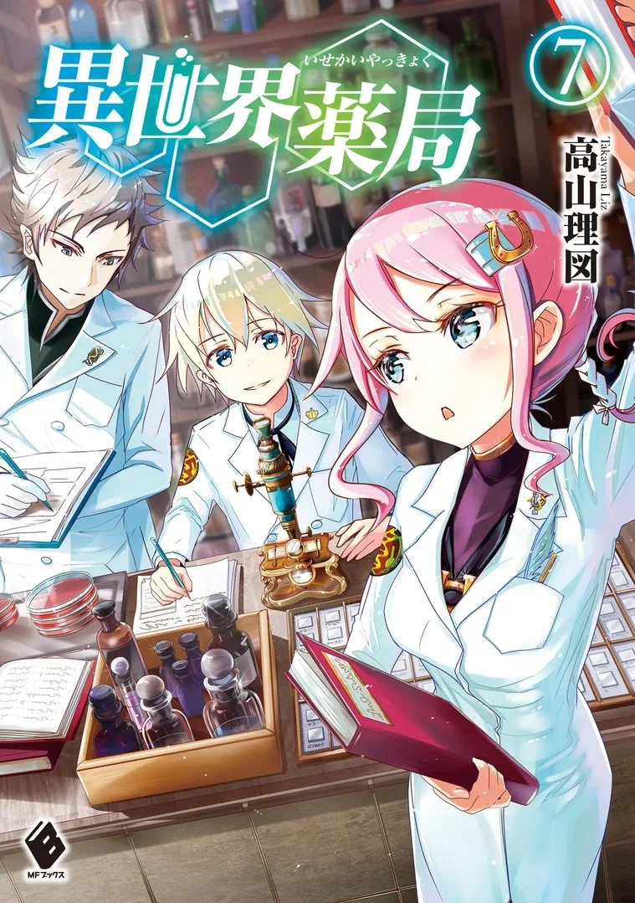
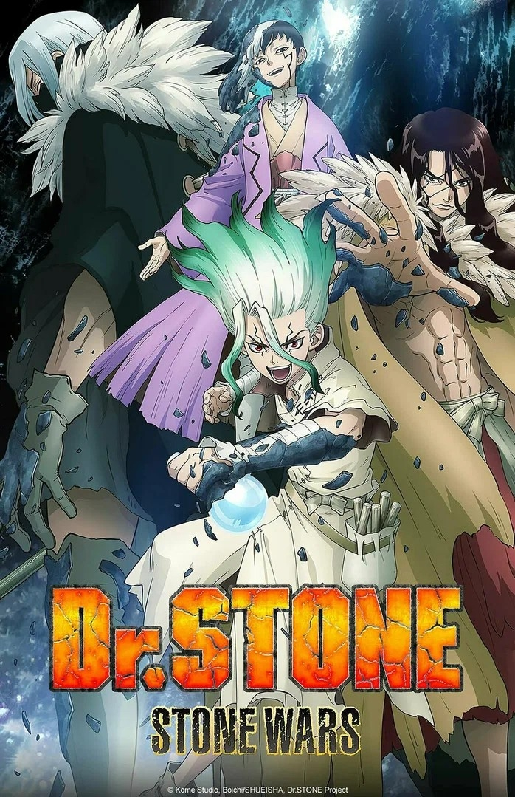
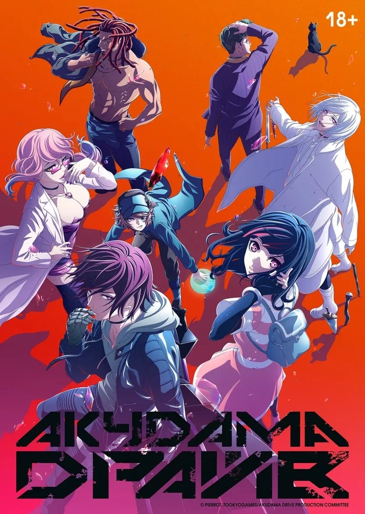
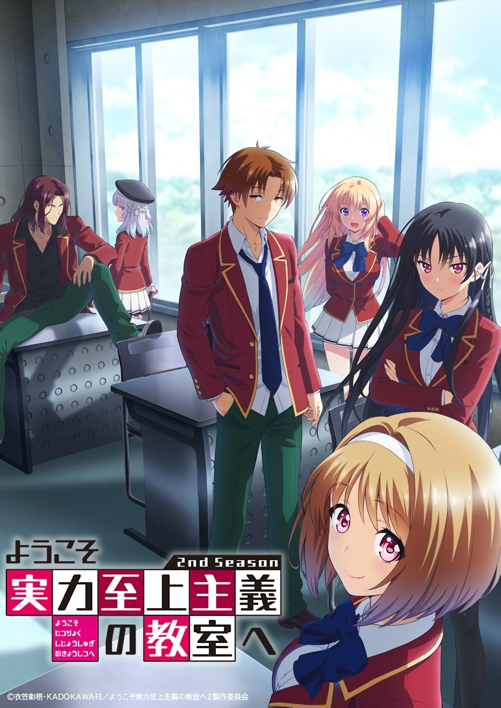
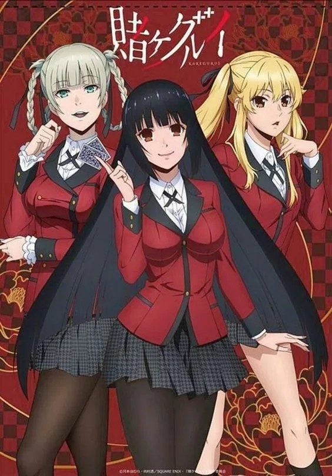
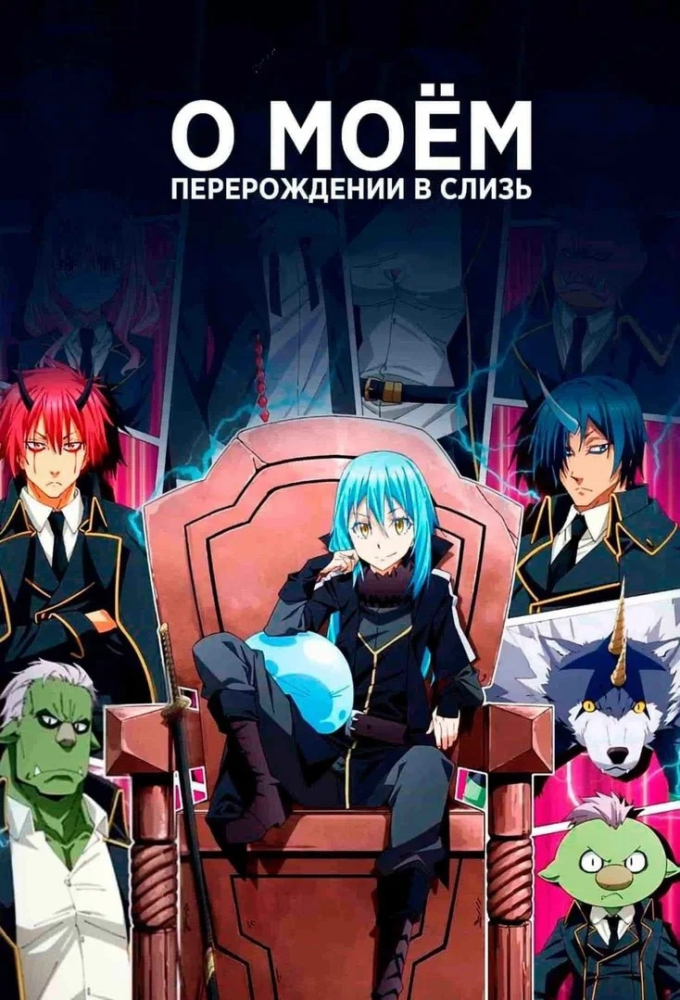
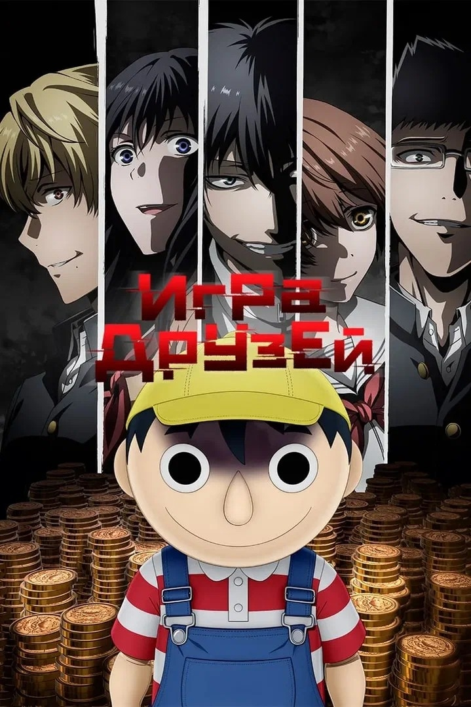
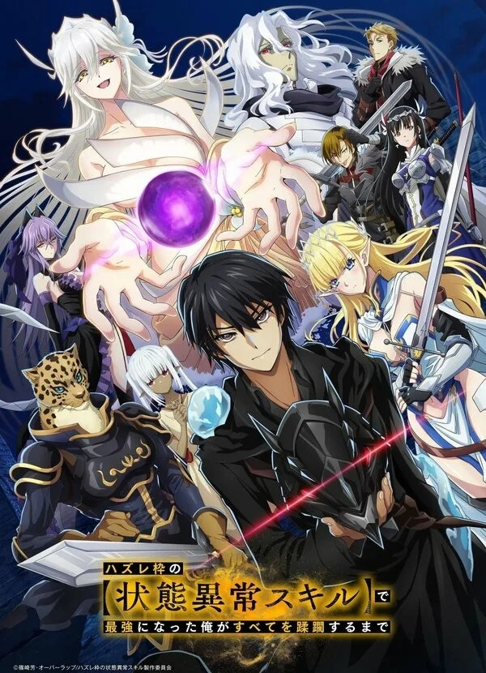

Любимые книги
Кликни по маленькому фото внизу — оно откроется сверху вместе с описанием.

Атака титанов
«Атака титанов» (оригинальное название Shingeki no Kyojin). Действие разворачивается в альтернативном мире, где человечество вынуждено бороться за выживание против титанов — огромных гуманоидных существ, которые поедают людей. Чтобы защититься, люди построили три гигантские стены («Мария», «Роза» и «Сина»). Но однажды титаны прорывают внешнюю стену. В этом хаосе погибает мать главного героя — Эрена Йегера. Юноша клянётся уничтожить всех титанов. Вместе с приёмной сестрой Микасой Аккерман и другом детства Армином Арлертом он вступает в армию.

Мастер меча онлайн
«Мастер меча онлайн» (Sword Art Online, SAO) — популярное аниме про выживание в виртуальной реальности с жёсткими ставками.
Действие стартует в альтернативном 2022 году. Изобретён шлем NerveGear, который даёт «полное погружение» в виртуальный мир: он передаёт все ощущения, будто ты и правда там. На волне хайпа выходит MMO‑RPG Sword Art Online — и в первый же день в неё заходят больше 10 000 игроков. А потом выясняется страшное: из игры нельзя выйти — в интерфейсе пропала кнопка «Выход».
Создатель проекта Акихико Каяба собирает всех и объясняет правила:
- Единственный способ вернуться в реальный мир — пройти игру: победить боссов и дойти до 100‑го этажа парящей крепости Айнкрад.
- Смерть персонажа в игре означает смерть игрока в реальности из‑за воздействия шлема на мозг.

Фармацевт из другого мира
Аниме «Фармацевт из другого мира» (оригинальное название — Isekai Yakkyoku, ещё встречается вариант «Аптека в другом мире») — это исекай (история про попаданца) с сильным упором на науку, медицину и создание лекарств.
Главный герой — опытный фармацевт Кандзи Якутани. Он всю жизнь стремился создавать лекарства, отчасти из‑за трагедии в детстве: его младшая сестра умерла от болезни, которую тогда не умели лечить. Кандзи работал на износ и в итоге сам умер от переутомления. После этого он перерождается в другом мире — в теле 10‑летнего мальчика Фальмы де Медисис, сына уважаемого придворного фармацевта и аристократа.
В новом мире медицина устроена совсем иначе: она опирается не на науку, а на суеверия, астрологию и «божественное провидение». Знания и опыт Кандзи здесь почти никому не знакомы, а его научный подход поначалу выглядит как магия или даже ересь. У Фальмы при этом есть и магические способности: он может диагностировать болезни, управлять веществами и создавать препараты.
Фальма решает не просто лечить людей, а менять саму систему здравоохранения. Он открывает аптеку и старается сделать эффективные лекарства доступными для всех, а не только для знати. По ходу сюжета он сталкивается с сопротивлением со стороны влиятельных гильдий и консервативных лекарей, а также помогает разным людям, показывая силу научного подхода.

Благословение небожителей
«Благословение небожителей» — это китайская новелла в жанре сянься (фэнтези на основе китайской мифологии и культуры), написанная писательницей Мосян Тунсю. На русском языке произведение издано в шести томах. Главный герой — Се Лянь, наследный принц государства Сяньлэ. В юности он вознёсся на Небеса, но был изгнан обратно на Землю. Спустя восемьсот лет скитаний Се Лянь в третий раз возносится на Небеса и получает задание расследовать исчезновения невест у подножия горы Юйцзюньшань. Во время расследования он встречает загадочного юношу по имени Саньлан, который оказывается могущественным демоном Хуа Чэном. Несмотря на их разное происхождение, между ними возникает особая связь. Вместе они раскрывают заговор, связанный с древним государством Баньюэ, и сталкиваются с древним злом, угрожавшим миру смертных и небесному царству. История затрагивает темы любви, преданности, дружбы, ненависти, мести, судьбы, выбора и долга.

Акудама Драйв
«Акудама Драйв» (Akudama Drive, 2020) — это стильный киберпанк‑боевик от студии Pierrot, который цепляет визуалом, ритмом и мрачной атмосферой.
Действие происходит в антиутопической Японии будущего. После долгой войны регион Канто победил Кансай, и теперь Кансай живёт под жёстким контролем и в упадке. В этом мире «акудама» — это не просто преступники, а своего рода легенды криминального мира: каждый из них — специалист в каком‑то виде преступлений (от взлома до заказных убийств), и у каждого свой узнаваемый образ и стиль.
По сюжету несколько акудама, которые привыкли работать в одиночку, оказываются втянуты в общую операцию. Их вынуждают сотрудничать под угрозой смерти: если кто‑то ослушается — его казнят. Задача команды — ограбить сверхзащищённый транспорт, который связывает разные части страны. По ходу дела вскрываются большие планы, а сами акудама сталкиваются с моральными дилеммами и предательством. Важную роль в управлении группой играет загадочный кот‑робот, который раздаёт приказы и следит за дисциплиной.

Класс превосходства
«Класс превосходства» (Classroom of the Elite, «Добро пожаловать в класс превосходства») — психологический триллер про элитную школу, где вместо обычных уроков идёт постоянная борьба за выживание и статус.
Действие происходит в Высшей воспитательной школе «Кодо Икусэй». Это престижное заведение, которое должно готовить будущую элиту страны. В школе необычная система: ученики получают ежемесячные баллы, которые работают как внутренняя валюта, а классы ранжированы от A до D. Класс A — это «лучшие», D — те, кого школа считает аутсайдерами.
Главный герой — Киётака Аянокодзи. Он поступает в школу и оказывается в классе 1‑D, который все считают «бракованным». Внешне Киётака выглядит как обычный тихий парень: не стремится выделяться, не показывает высоких результатов, старается держаться в тени. Но на деле он очень умный, отлично просчитывает людей и ситуации, а ещё обладает серьёзной физической подготовкой.
Почти всё в школе завязано на испытаниях и соревнованиях между классами. Результаты влияют на рейтинг класса, а низкий рейтинг грозит отчислением. Ученики вынуждены объединяться, искать слабые места соперников, договариваться и иногда предавать друг друга. Киётака часто действует не напрямую, а через других людей, оставаясь в стороне и сохраняя свой «незаметный» образ.

Безумный азарт
«Безумный азарт» (Kakegurui, 2017) — это психоделический психологический триллер про элитную школу, где вся иерархия держится на азартных играх, а ставки могут стоить не только денег, но и свободы, репутации и человеческого достоинства.
Действие происходит в частной академии Хяккао — престижном заведении для детей сверхбогатых и влиятельных семей. Здесь не ценят оценки, спорт или творчество: статус ученика определяется исключительно его успехами в азартных играх. В школе царит жёсткая иерархия: победители становятся элитой и могут буквально «владеть» проигравшими, а должники превращаются в «питомцев» — бесправных слуг, которых можно унижать и использовать.
В академию переводится Юмэко Джабами. С виду она милая, дружелюбная и немного наивная, но на деле — настоящий маньяк азарта: ей важен не выигрыш, а сам момент, когда всё поставлено на кон и исход висит на волоске. Юмэко не ищет лёгких побед: она ненавидит предсказуемые игры и обожает срывать маски, обнажая истинную натуру соперников.
Её появление ломает устоявшийся порядок. Она бросает вызов сильным игрокам, вскрывает схемы жульничества и постепенно вступает в противостояние со студенческим советом во главе с харизматичной и расчётливой Кирари Момобами. По ходу сюжета мы видим целую галерею эксцентричных игроков: от одержимой риском Мидари Икисимы до прагматичной Мэри Саотомэ. Каждая игра здесь — это мини‑драма с психологическим давлением, блефом и неожиданными ходами.

О моём перерождении в слизь
«О моём перерождении в слизь» (That Time I Got Reincarnated as a Slime, Tensei shitara Slime Datta Ken) — один из самых известных исекаев, который берёт классическую формулу «попаданец в другом мире» и делает на её основе масштабную историю про дипломатию, развитие государства.
37‑летний офисный работник Сатору Миками ведёт обычную, немного одинокую жизнь. Однажды он становится жертвой уличного нападения и погибает. После смерти он перерождается в другом, фэнтезийном мире — но не как могучий воин или маг, а в виде… слизи.
В новом теле он получает имя Римуру Темпест (его даёт древний дракон Вельдора, с которым Римуру быстро сближается) и необычные способности: например, навык «Хищник», позволяющий поглощать объекты и перенимать их свойства и умения. Поначалу это кажется странным «бонусом», но позже становится одной из главных механик силы Римуру.
Сначала Римуру помогает небольшой группе гоблинов, даёт им имена (в этом мире имя от могущественного существа даёт монстру силу и разум), и они становятся его первыми подданными. Постепенно вокруг него собирается всё больше существ: жутковолки, огры, духи, элементали и другие. Он основывает поселение в лесу Джура, а затем и целый город, а позже — целую федерацию. По ходу истории Римуру сталкивается с внешней угрозой: королевства людей видят в монстрах врагов, а церковь проповедует их уничтожение. Так он из «просто сильной слизи» становится одним из князей тьмы и ключевой фигурой в большой политике мира.

Игра друзей
«Игра друзей» (Tomodachi Game, 2022) — психологический триллер про то, как деньги и манипуляции могут разрушить даже самую крепкую дружбу. По тону он похож на «Игру в кальмара» и «Класс превосходства»: тут тоже много майндгеймов, холодного расчёта и тяжёлых выборов.
Главные герои — старшеклассники, обычная компания друзей. У них была запланирована классная поездка, для которой весь класс собирал деньги. Но средства пропадают, и подозрение падает на тех, кто отвечал за сбор. В итоге двое друзей берут вину на себя и отдаляются от класса.
А потом пятерых друзей (включая главного героя Юити Катагири) внезапно похищают и запирают в белой комнате. Там им объявляют правила «Игры друзей»: они должны участвовать в серии психологических и финансовых испытаний, где ставка — огромные долги. Если отказаться, долг одного из них всё равно распределится между всеми. Цель организаторов — сломать доверие внутри группы и заставить друзей предавать друг друга.
Юити — умный и очень преданный друзьям парень, но ради их спасения он готов действовать жёстко и просчитывать ходы наперёд. По ходу игр вскрываются секреты каждого, а дружба проходит проверку на прочность: каждый раунд вынуждает выбирать между личной выгодой и верностью близким.

Я стал самым сильным с провальным навыком „Ненормальное состояние“, и я разрушу всё
«Я стал самым сильным с провальным навыком „Ненормальное состояние“, и я разрушу всё» (Hazurewaku no «Joutai Ijou Skill» de Saikyou ni Natta Ore ga Subete wo Juurin suru made) — это исекай 2024 года про месть, выживание и раскрытие «бесполезного» навыка, который на деле оказывается невероятно мощным.
Школьника Току Мимори вместе с классом призывает в другой мир богиня Вишис, чтобы сделать из ребят героев. Каждому проводят оценку способностей и присваивают ранг от S до D, а Токе достаётся самый низкий — E. Из‑за этого богиня решает, что он будет только обузой, и отправляет его в смертельно опасное подземелье, откуда никто не возвращался живым.
У Токи навык, который все считают провальным, — «Ненормальное состояние»: он связан с накладыванием статусных эффектов вроде паралича, отравления, сна и т. п. В системе этого мира такие способности считаются слабыми и малополезными. Но Тока не сдаётся: в подземелье он начинает активно использовать свой навык, тренировать его и раскрывать скрытые механики. Постепенно выясняется, что при правильной прокачке и комбинации эффектов этот навык способен буквально «ломать» противников и системы мира.
Тока выживает, выбирается наружу и теперь намерен показать тем, кто его предал, насколько он на самом деле силён. Дальше сюжет строится вокруг его роста, раскрытия силы, столкновений с бывшими одноклассниками и системой, которая считала его бесполезным.